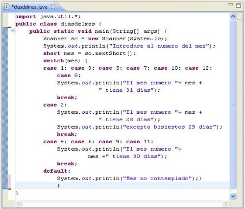

Clasificación del software
Una posible clasificación del software es la que lo divide en tres grandes grupos:
- Software de sistemas: el ciclo de ASIR se centra principalmente en este tipo de software.
- Software de programación: nosotros nos centraremos principalmente en este software. Estamos hablando de editores de texto, compiladores, intérpretes, enlazadores, depuradores, programas de modelado de software, software de pruebas, gestores de versiones, etc. Y agrupando todo este compendio de utilidades, tenemos también los Entornos de Desarrollo Integrados (IDE).
- Software de aplicación: es el software que utiliza el usuario final.
Introducción a los lenguajes de programación
En el siguiente enlace, podemos encontrar una clasificación de lenguajes de programación: Lenguajes de programación
Ejemplos de lenguajes de bajo nivel
Programa en código máquina (tftp) visualizado con el programa bless.

Programa en ensamblador para escribir "Hola mundo".
Ejemplo de lenguaje de medio nivel
Suele considerarse de medio nivel el lenguaje C y en ocasiones C++ por la forma de usar punteros y la gestión de memoria.
Programa en C manejando punteros y gestión de memoria
Ejemplo de lenguajes de alto nivel (Java)
Los lenguajes considerados de alto nivel son VB.NET, Ada, Java, Lisp, PHP, PL/SQL, Python, C#, Ruby, etc.
Ejemplo escrito en Java
Actividad 1. ¿Qué problemas presentan los lenguajes ensambladores? ¿Qué es un lenguaje de alto nivel? ¿Qué ventajas aportan los lenguajes de programación de alto nivel?
Entrega la actividad en un archivo de texto llamado Act1-introduccion.
Lenguajes de programación según su ejecución
Interpretados
Lenguajes de programación interpretados
Hola mundo en bash
Al ser interpretado, si introducimos una línea incorrecta al final, seguirá funcionando.
Hola mundo en Java
- Instalar JDK. Debemos escoger una versión acorde a nuestro sistema operativo. En principio, asumiré que estamos empezando con Windows, así que yo descargaré jdk-8u60-windows-x64.exe. Durante la instalación se nos informará el lugar donde se instalará Java. En mi caso, esa carpeta es
C:\Program Files\Java\jdk1.8.0_60. - Una vez instalado, agregamos la ruta a las herramientas de JDK a la variable de entorno %PATH%. En mi caso, la carpeta de interés es
C:\Program Files\Java\jdk1.8.0_60\bin, ya que ahí es donde están las herramientas de desarrollo. - Abrimos un editor de texto, y escribimos lo siguiente:
- Guardamos el archivo en la carpeta
C:\ED\con el nombreholamundo.java. - A continuación compilamos el código fuente, para obtener el archivo
bytecode, mediante el comando siguiente: - Una vez compilado, podremos ver que hay un nuevo archivo
holamundo.classen el directorioC:\ed. Para ejecutarlo utilizamos el comandojava. A este comando tenemos que indicarle la ruta a los archivos .class mediante el parámetro-classpath ruta_a_archivos_class, así como el nombre de la clase a ejecutar. Así, para nosotros, el comando completo sería:java -classpath C:\ED holamundo
Compilados
Lenguajes de programación compilados
En el proceso de compilación un programa compilador (compiler) traduce el código fuente a código máquina en un proceso que consta de tres fases:
El resultado de este proceso es el código objeto del programa, es decir, uno o más archivos que contienen la traducción a código máquina del programa almacenado en el código fuente original. Si hay varios códigos objeto interdependientes, es preciso enlazarlos antes de tener un programa ejecutable.
Hola mundo en C
- Una vez escrito el programa lo compilamos:
- De este modo obtenemos el código máquina listo para ejecutar.
Lenguajes de programación según su paradigma
Un paradigma de programación representa un enfoque particular o filosofía para diseñar soluciones. Los paradigmas difieren unos de otros, en los conceptos y la forma de abstraer los elementos involucrados en un problema, así como en los pasos que integran su solución del problema. Existen diversas clasificaciones, aunque una buena opción es la siguiente:
- Programación imperativa
- Programación declarativa
- Programación orientada a objetos
Actividad 3. La sentencia GOTO fue protagonista de cambios importantes en los lenguajes de programación ¿Para qué sirve la sentencia GOTO? ¿Qué problemas puede acarrear el uso de esta sentencia en la escritura de programas? ¿Cómo se denomina el estilo de programación que eliminó por primera vez el uso de GOTO en el código fuente de los programas? Explica dentro de que paradigma se encuentra.
Entrega la actividad en un archivo llamado Act3-introduccion.odt
Actividad 4. ¿Cuáles son las principales características de la programación estructurada?
Entrega la actividad en un archivo llamado Act4-introduccion.
Actividad 5. Observa la siguiente lista de lenguajes:
- Java
- C
- C++
- Haskell
- Ensamblador
Confecciona una tabla, donde para cada uno de ellos, indiques:
- Su nivel de abstracción
- Si son compilados o interpretados
- El paradigma de programación que utilizan
Guarda la actividad en un documento llamado Act5-introduccion.
Listas de lenguajes más utilizados:
GitHub muestra datos sobre los lenguajes más populares.
Modelos de desarrollo de software
En el siguiente documento, podemos ver un análisis de diferentes metodologías de desarrollo del software: Metodologías y ciclos de vida del software.
Ingeniería del software
La ingeniería del software ofrece procesos, métodos y herramientas para desarrollar un producto software al menor coste posible, en el menor tiempo posible, buscando la máxima satisfacción del cliente y la calidad del producto.
- Proceso (marco de trabajo)
- ¿Quién se comunica con quién?
- ¿Cómo se coordinan las actividades interdependientes?
- ¿Quién es responsable de qué trabajo?
- ¿Quién produce qué productos de trabajo, y cómo se evalúan?
- Todas las actividades y tareas de la ingeniería del software (una actividad se compone de tareas)
- Define el flujo de trabajo entre las actividades y tareas
- Identifica los productos de trabajo que se producen
- Especifica los puntos de control de calidad requeridos
- Mecanismos para monitorizar y medir el avance del proyecto
- Métodos (cómo llevar a cabo las actividades determinadas en un proceso)
- ANÁLISIS: el análisis es el fundamento de todos los trabajos de ingeniería que siguen. Durante el análisis, se crea el modelo de lo que es requerido por el software.
- DISEÑO: las actividades de diseño siguen el análisis y traducen el modelo del análisis en cómo el producto proporciona estas funciones por medio del software.
- CODIFICACIÓN: una vez que el diseño es completo, la codificación traduce el modelo de diseño en una forma ejecutable.
- PRUEBAS: el proceso de pruebas ayuda a destapar errores en el código y el diseño subyacente.
- Herramientas (automatización de las capas de Proceso y Métodos)
- Herramientas de gestión de proyectos
- Herramientas de control de cambios
- Herramientas de análisis y diseño
- Herramientas de generación de código
- Herramientas de pruebas
- Herramientas de reingeniería
- Herramientas de documentación
- Herramientas de prototipos
- Etc...
- Enfoque de calidad
-
Da respuesta a...
-
Determina...
-
Las actividades técnicas fundamentales son:
Un ejemplo de proceso es MÉTRICA. Se trata de un proceso que determina la planificación, desarrollo y mantenimiento de sistemas de información, promovida por el Ministerio de Hacienda y Función Pública (antiguo Ministerio de Administraciones Públicas ) del Gobierno de España para la sistematización de actividades del ciclo de vida de los proyectos software en el ámbito de las administraciones públicas.
Ciclo de vida
Un ciclo de vida o paradigma de desarrollo del software determina lo siguiente:
- El orden de las fases (conjuntos de actividades) del proceso de software
- Establece los criterios de transición para pasar de una fase a la siguiente
- Define las entradas y salidas de cada fase
- Describe los estados por los que pasa el producto
- Describe las actividades a realizar para transformar el producto
- Define un esquema que sirve como base para planificar, organizar, coordinar, desarrollar...
- Define los entregables de cada fase (documentación o software)
Modelo en cascada
Modelo sashimi
Modelo en V
Modelo iterativo

Modelo incremental

Modelo en espiral

Modelo de prototipado

Actividad 6. Confecciona un documento con los modelos de ciclo de vida comentados en clase. Dicho documento debe tener la siguiente estructura:
- Una descripción de cada modelo de ciclo de vida, donde se explique en qué consiste y se añada un gráfio explicativo.
- Una tabla comparativa entre los diferentes ciclos de vida, donde se indiquen las ventajas e inconvenientes de cada uno.
Entrega un documento llamado Act6-introduccion.
Scrum
Dentro de las metodologías de desarrollo, cobran fuerza las metodologías ágiles. Pero qué es el agilismo (Ver. Cap.1 de Diseño Ágil con TDD).
Una de las metodologías de desarrollo ágil es Scrum.
Qué es Scrum
Scrum es un marco de trabajo de procesos que ha sido usado para gestionar el desarrollo de productos complejos desde principios de los años 90. Scrum no es un proceso o una técnica para construir productos; en lugar de eso, es un marco de trabajo dentro del cual se pueden emplear varias técnicas y procesos.
Qué contiene Scrum
El marco de trabajo Scrum consiste en los siguientes componentes:
- Equipos Scrum
- Roles
- Eventos
- Artefactos
- Reglas que relacionan los Roles, Eventos y Artefactos
Empirismo
Scrum se basa en la idea de que el conocimiento sobre un proyecto se va adquiriendo a partir de la experiencia previa en el mismo.
Las decisiones se toman en iteraciones cortas, que permiten aumentar la predecibilidad.
Para que el control de procesos empírico funcione, se deben dar tres condiciones: transparencia, inspección y adaptación.
- Transparencia: Los responsables del resultado deben tener una idea común sobre los aspectos importantes del proceso. Por ejemplo:
- Todos los participantes deben compartir un lenguaje común para referirse al proceso
- Aquellos que desempeñan el trabajo y aquellos que aceptan el producto de dicho trabajo deben compartir una definición común de
Terminado.
- Inspección: Los usuarios implicados en Scrum deben inspeccionar regularmente los artefactos de Scrum y el progreso del proyecto, pero no como para interferir en su trabajo.
- Adaptación: Si un inspector determina que uno o más aspectos de un proceso se desvían de límites aceptables, y que el producto resultante no será aceptable, el proceso o el material que está siendo procesado deben ser ajustados. Dicho ajuste debe realizarse cuanto antes para minimizar desviaciones mayores.
Scrum prescribe cuatro eventos formales para la inspección y adaptación:
- Reunión de Planificación del Sprint (Sprint Planning Meeting)
- Scrum Diario (Daily Scrum)
- Revisión del Sprint (Sprint Review)
- Retrospectiva del Sprint (Sprint Retrospective)
El equipo Scrum
Los equipos Scrum están formados por personas que están directamente relacionadas con el producto. No deben haber terceras personas que lo dirija externamente.
Son autoorganizados, es decir, deciden internamente la mejor forma de llevar a cabo su trabajo.
El Equipo Scrum consiste en:
- Dueño de Producto (Product Owner): Es el cliente. Sus responsabilidades son:
- Ser el representante de todas las personas interesadas en los resultados del proyecto y actuar como interlocutor único ante el equipo, con autoridad para tomar decisiones.
- Definir los objetivos del producto o proyecto.
- Crea y mantiene la lista priorizada con los requisitos o
Product Backlog. Puesto que conoce el valor que aportará cada requisito, los prioriza en base al coste que el Equipo de Desarrollo. - Reparte los objetivos/requisitos en iteraciones y establece un calendario de entregas.
- Antes de iniciar cada iteración replanifica el proyecto en función de los requisitos que aportan más valor en ese momento, de los requisitos completados en la iteración anterior y del contexto del proyecto en ese momento.
- Participar en la reunión de planificación de iteración, proponiendo los requisitos más prioritarios a desarrollar, respondiendo a las dudas del equipo y detallando los requisitos que el equipo se comprometer a hacer.
- Estar disponible durante el curso de la iteración para responder a las preguntas que puedan aparecer.
- No cambiar los requisitos en medio de una iteración
- Equipo de Desarrollo (Development Team): Es el equipo que desarrolla el producto.
- Estimar la complejidad de cada requisito en el
Product Backlog(lista priorizada de requisitos priorizada) del producto o proyecto. - Seleccionar los requisitos que se compromete a completar en una iteración, de forma que estén preparados para ser entregados al cliente.
- En la reunión de planificación de la iteración subdivide los requisitos en tareas:
- Identificar todas las tareas necesarias para completar cada requisito.
- Estimar el esfuerzo necesario para realizar cada tarea.
- Cada miembro del equipo se autoasigna a las tareas.
- Cada especialista lidera el trabajo en su área y el resto colaboran si es necesario para poder completar un requisito.
- Demostrar al cliente los requisitos completados al final de cada iteración.
- Hacer una retrospectiva la final de cada iteración para mejorar de forma continua su manera de trabajar.
- Todos los miembros del equipo trabajan en la misma localización física.
- Scrum Master: Trabaja para que Scrum se aplique correctamente:
- Asegurar que exista un
Product Backlog(lista de requisitos priorizada) y que esté preparada antes de la siguiente iteración. - Tener claro lo que está pasando en cada momento.
- Se coordina con el
Product Ownerpara aportar activamente durante la priorización de requisitos, y detectar los riesgos asociados. - Interviene en las reuniones de Scrum (planificación de la iteración, reuniones diarias de sincronización del equipo, demostración, retrospectiva), haciendo propuestas que mejoren la productividad y consigan sus objetivos.
- Actúa de "traductor" entre el
Product Owner, que probablemente no tenga conocimientos sobre tecnología, y el Equipo de Desarrollo, que probablemente no tenga conocimientos sobre negocios. - Plantea las preguntas adecuadas durante la demostración del sprint y la restrospectiva, para conseguir respuestas cortas, honestas y valiosas, para aportar valor en la siguiente iteracion
- Protege al equipo del Product Owner de cambios durante un sprint, renegociándolos para que afecten lo menos posible al sprint y no haya que cancelar el sprint completo.
- Resuelve los problemas de cualquier tipo que puedan afectar al Equipo de Desarrollo.
- Forma a los miembros que no conocen Scrum sobre su funcionamiento (actúa como un coach).
- Se asegura de que la definición de
Terminadose cumple. Por ejemplo, una definición de terminado podría incluir: - Cumplir con los criterios de aceptación definidos en la historia de usuario
- Las pruebas unitarias, de integración y de aceptación deben haber sido terminadas
- Deben existir cero defectos de severidad alta
- La revisión de código por algún colega debe haberse completado.
Eventos de Scrum
En Scrum existen eventos predefinidos con el fin de crear regularidad y minimizar la necesidad de reuniones no definidas en Scrum. Todos los eventos son bloques de tiempo (time-boxes), de tal modo que todos tienen una duración máxima. Los eventos son:
- El Sprint: El corazón de Scrum es el Sprint, es un bloque de tiempo (
time-box) de un mes o menos durante el cual se crea un incremento de productoTerminado, utilizable y potencialmente desplegable. - Su duración es fija, no puede alargarse ni acortarse.
- Su duración suele ser de 1 mes
- Cada nuevo Sprint comienza inmediatamente después de la finalización del Sprint previo.
- No se realizan cambios que puedan afectar al Objetivo del Sprint (
Sprint Goal) - Dentro de un Sprint se producen otros eventos:
- Reunión de Planificación del Sprint (
Sprint Planning Meeting) - Scrums Diarios (
Daily Scrums) - El trabajo de desarrollo
- Revisión del Sprint (
Sprint Review) - Retrospectiva del Sprint (
Sprint Retrospective) - El alcance de cada sprint puede ser clarificado y renegociado entre el Dueño de Producto y el Equipo de Desarrollo a medida que se va aprendiendo más sobre el proyecto.
- Un sprint puede cancelarse bajo la responsabilidad del
Producto Owner, porque: - La compañía cambia la dirección
- Las condiciones del mercado o de la tecnología cambian
- Si no tuviese sentido seguir con él dadas las circunstancias.
- Reunión de Planificación del Sprint (
Sprint Planning Meeting): Es la reunión en la que se planifica lo que se va a hacer durante el Sprint - Tiene una duración de 8 horas, dividas en dos partes de 4 horas cada una.
- La primera parte de la reunión (de 4 horas) responde a ¿Qué puede ser terminado en este Sprint?.
- El
Product Ownerpresenta al equipo elProduct Backlog, pone nombre a la meta del Sprint oSprint Goal*(de manera que ayude a tomar decisiones durante su ejecución) y propone los requisitos más prioritarios a desarrollar en ella. - El Equipo de Desarrollo examina la lista y hace lo siguiente:
- Pregunta sobre el alcance de cada requisito. Por ejemplo, "¿Borrar 'Artículo' implica borrar todas las facturas relacionadas con ese artículo?"
- Añade nuevas condiciones de satisfacción, del tipo "Dado aaa, cuando se produzca bbb, entonces ccc".
- Selecciona los requisitos del
Product Backlogmás prioritarios que se compromete a completar en el Sprint. - La segunda parte de la reunión (de 4 horas) responde a ¿Cómo se va a conseguir completar el trabajo?.
- El Equipo de Desarrollo descompone los requisitos en tareas.
- Realiza una estimación del coste necesario para realizar cada tarea.
- Estimaciones a mano alzada que hacen los miembros del Equipo de Desarrollo.
- Cálculos de velocidad teniendo en cuenta la velocidad en de los Sprint anteriores.
- El Equipo de desarrollo decide qué requisitos (con todas sus tareas) se incluirán en el Sprint.
- El
Product Ownerpuede realizar cambios en los requisitos si desea que uno de ellos entre en el Sprint: - Puede subir la prioridad del requisito de interés para que suba en el
Product Backlogy así entre en el Sprint actual - Puede bajar la prioridad de un requisito de modo que el requisito de interés se adelante en
Product Backlogy entre en el Sprint actual - Puede reducir el alcance del requisito de interés para que así disminuya su coste y pueda entrar en el Sprint actual
- Puede dividir el requisito de interés en requisitos más pequeños para que así uno de ellos (el de mayor interés) entre en el Sprint
- Finalmente, cada miembro del Equipo de Desarrollo se hace cargo de ciertas tareas.
Sprint Goal: El objetivo del Sprint debe poder resumir el objetivo del Sprint en una única frase. Por ejemplo, "Los usuarios deben poder hacer transferencias bancarias".
Una vez que ha terminado el Sprint Meeting, tenemos un Sprint Backlog, que es el conjunto de requisitos a cubrir durante el presente Sprint. Normalmente, tanto el el Product Backlog como el Sprint Backlog se almacenan en un documento/software que permite la compartición entre el Product Owner, el Scrum Master y el Equipo de Desarrollo. Esto puede hacerse mediante una hoja de cálculo compartida, o mediante programas específicos, como Planbox, Targetprocess, Yodiz, VersionOne, Axosoft, etc.
Hay un elemento muy importante que se utiliza durante el Sprint Planning Meeting y durante todo el Sprint, llamado Task Board. El Task Board puede consistir en una simple pizarra, con una estructura como la siguiente:
A partir del Product Backlog se van colocando los requisitos en la columna TO DO, y es donde se discute sobre qué requisitos y tareas se van a llevar a cabo en el Sprint.
Cuando se van desglosando los requisitos en forma de tareas, se pueden utilizar postits de diferentes colores, como en el siguiente gráfico:
- Daily Scrum: Es una reunión de 15 minutos donde cada miembro informa a los demás sobre ciertas cuestiones:
- ¿Qué hice ayer desde la última reunión de sincronización? ¿Pude hacer todo lo que tenía planeado? ¿Cuál fue el problema?
- ¿Qué haré hoy?
- ¿Qué problemas tengo para cumplir mis compromisos?
- Todos los miembros escuchan al que está hablando sin interrumpir.
- Mientras un miembro del Equipo de Desarrollo habla, va modificando el
Task Board, moviendo tareas y/o requisitos, según los cambios que se hayan dado. - Se pueden hacer cambios de estimación de coste de las tareas y requisitos sobre la marcha, cuando el equipo así lo considere.
- A veces pueden surgir nuevas tareas que no se habían planificado de cierta urgencia. Estas tareas se añaden a la sección
No planificadasdelTask Board - Al final del
Daily Scrum, hay que actualizar el Burn-Down
En esta reunión se informa únicamente, no se resuelven los problemas, para cumplir el TimeBox de 15 minutos. Después, el resto de miembros se puede ofrecer para ayudar, y en caso de no poder, se derivará al Scrum Master.
El Burn-Down Chart es un gráfico que permite hacer un seguimiento sobre los progresos del proyecto:

- Sprint Review: Es una demostración de lo que se ha conseguido en el
Sprint. - Tiene un
TimeBoxde 4 horas - El equipo, junto con el
Producto Ownery elScrum Masterse reunen, y el Equipo hace una demostración de lo conseguido. - El
Product Ownerhace preguntas y/o comentarios sobre el resultado - Se plantean cambios sobre el producto para el próximo
Sprint Planning Meeting. - Se habla informalmente sobre qué hacer a continuación, para incluirlo en el próximo
Sprint Planning Meeting.
- Sprint Retrospective: Reunión para hablar sobre la productividad y la calidad obtenida en el
Sprintanterior. - Es una reunión a la que asisten solamente los miembros del
Equipo de Desarrollo - Se hace siempre después del
Sprint Review - Se cubren los siguientes aspectos:
- Qué cosas han funcionado bien.
- Cuales hay que mejorar.
- Qué cosas se quieren probar hacer en el siguiente
Sprint. - Qué se ha aprendido.
- Cuales son los problemas que podrían impedir progresar adecuadamente. El
Scrum Masterse encargará de ir eliminando los obstáculos identificados que el propio equipo no pueda resolver por sí mismo.
- Release Planning Meeting: El propósito es acordar las entregas. Una entrega puede incluir los productos desarrollados en uno o más Sprints.
- Se necesitan los siguientes elementos para fijar las entregas:
- Un
Product Backlogdonde cadaHistoria de Usuariotenga asignada Valor y Coste - Una estimación de la velocidad del
Equipo de Desarrollo, obtenida a partir de los Sprints anteriores. - Las
Entregasson imprecisas, ya que se basan en estimaciones de coste y velocidad aproximados. - Se pueden refinar durante el
Sprint Planning Meeting, o bien crear una reunión específica. - No debe alargarse demasiado, puesto que siempre se basa en información imcompleta, y no merece la pena gastar demasiado tiempo en una información que podría cambiar.
Artefactos de Scrum
Scrum utiliza una serie de conceptos y herramientas útiles para conseguir lo que Scrum busca: Transparencia para que todos los que participan en el proyecto tengan la misma idea sobre el mismo, y sobre lo que se está haciendo.
- Definición de Trabajo Terminado (
Definition of DoneoDoD: Es la idea acordada entre el Equipo de Desarrollo y elProduct Ownersobre lo que significa que un requisito ha sido completado. Terminadodebe ser entregable, para que elProduct Ownerpueda tomar decisiones en elSprint Review, como por ejemplo, cambiar las condiciones de satisfacción en función de la velocidad del proyecto, reforzar ciertas condiciones, etc.- Debe incluir condiciones de satisfacción claras y concisas, como por ejemplo:
- Código fuente escrito
- Código fuente probado con pruebas unitarias/de integración
- Código fuente documentado
- Código fuente refactorizado para conseguir calidad interna/mantenibilidad
- etc.
- Las condiciones de satisfacción deben ser utilizadas para identificar las tareas a realizar durante el
Sprint
- Pila de Producto (
Product Backlog): ElProduct Backloges una lista ordenada de todo lo que podría ser necesario en el producto - Es propiedad del
Product Owner, es decir, es su responsable en cuanto a su contenido, su disponibilidad y su orden - Es la única fuente de requisitos para cualquier cambio a realizarse en el producto.
- La lista no es necesario que sea completa ni que el detalle sea muy alto en todos los requisitos.
Es mejor que el nivel de detalle vaya aumentando y el orden vaya cambiando (refinamiento) conforme el proyecto avanza. Así, los requisitos más importantes se tratarán primero, y los menos importantes se dejarán para Sprints posteriores.
- Historias de usuario/Requisitos (
User Stories): Son las partes que componen unProduct Backlog, y que se utilizarán durante todo el proceso. - Una historia es un requisito de negocios visto desde el punto de vista de un usuario.
- Un ejemplo: Como cliente del banco, quiero pedir un préstamo para poder comprar una casa
- Cuando se trabaja sobre una historia de usuario, hay que definir varios aspectos
- La historia en sí
- Valor (numérico) que aporta la historia desde el punto de vista del
Product Owner. - Coste (numérico) que supone la historia desde el punto de vista del Equipo de Desarrollo.
- Riesgo que supone el desarrollo de la historia, en función de las dependencias, estado de la tecnología, nivel de experiencia, etc.
- Condiciones de satisfacción de la historia.
- Las historias de usuario se suelen plasmar en tarjetas al colocarlas en el
Task Board
A continuación, algunos ejemplos de Historias de Usuario.

- Pila de Sprint (
Sprint Backlog): Es la lista de tareas que el equipo elabora en elSprint Planning Meetingcomo plan para completar los objetivos/requisitos seleccionados para elSprint. - Cada objetivo/requisito está asociado a:
- Tareas asociadas
- Coste por cada tarea
- Asignación que han hecho los miembros del equipo.
- Debe poder verse la evolución de las tareas según su estado. Posibles ejemplos de estado pueden ser:
- Por hacer
- En desarrollo
- En pruebas
- Completado
- Si una tarea depende de otra, se coloca en algún punto por debajo de la que depende.
- El
Sprint Backlogsuele representarse en unaTask Board, oKanban Board.
Existen diveras maneras de reflejar el Sprint Backlog. A continuación podemos ver algunos ejemplos:

Sprint Backlog hecho con Target Process
Sprint Backlog hecho mediante una pizarra y postits
- Gráficos de Trabajo Pendiente (
Burndown Chart): Es un gráfico de trabajo pendiente en elSprint. - Muestra la velocidad a la que se está completando los objetivos/requisitos.
- Permite estimar si el Equipo podrá completar el trabajo en el tiempo estimado.
- La tabla tiene dos ejes:
- Vertical: Coste del
Sprint - Horizontal: Días del
Spring - La evolución ideal del Sprint, viene dada por una línea que une dos puntos de la tabla:
- Punto inicial: (Día_0 , Coste_total_Sprint)
- Punto final: (Día_30 , Coste_0)
- Conforme se van completando tareas, se van añadiendo puntos a la gráfica
Actividad 8. Busca información sobre Planning Poker. Después prepara el tuyo propio sobre la marcha, y trata de asignar un coste a las siguientes tareas, poniéndote de acuerdo con otros 3 compañeros, sobre las siguientes tareas:
- Realizar una compra en Internet en Amazon.
- Realizar una compra en Internet mediante transferencia bancaria, con comprobante.
- Instalar el CMS Wordpress desde cero.
- Crear una página web para publicitar nuestro currículum.
- Instalar CentOS 7 una máquina virtual.
Para cada pregunta, anota los valores obtenidos en las diferentes rondas hasta alcanzar un consenso. Describe también qué argumentos han hecho cambiar de opinión a los miembros del equipo.
Entrega un documento con lo que se pide, llamado Act8-introduccion.odt. El archivo debe contener los nombres de los componentes del equipo.
Scrum en la práctica
Un análisis muy interesante sobre lo que es Scrum en la práctica, viene explicado en el Scrum y XP desde las trincheras.
Actividad 9. Observa las siguientes imágenes. Cada una de ellas muestra el estado de un Sprint durante el desarrollo de un proyecto por parte de la empresa PSF (Programadores Sin Fronteras).
{kind=link}
{kind=link}
{kind=link}
¿Dirías que el proyecto va bien. Edita las imágenes, añadiendo el estado de la gráfica del Burn-Donw chart en cada momento.
Actividad 10. En el proyecto del ejercicio anterior, en el día 5, ¿Podríamos comenzar la tarea 2.2? ¿Por qué?
En caso de que la actividad 2.2. no pueda comenzar, indica una que sí pueda hacerlo y explica por qué.
Entrega un documento llamado Act10-introduccion.txt con la respuesta.
Actividad 11. Imagina que en la empresa PSF han decidido incluir las tareas no planificadas en otro color (naranja) en el Taskboard conforme van apareciendo. Observa el estado del proyecto en el día 16. Edita la imagen adjuntada a continuación, teniendo en cuenta las tareas no planificadas.
{kind=link}
Actividad 12. Escoge uno de los siguientes apartados del libro Scrum y XP desde las trincheras:
- COMO HACEMOS PILAS DE PRODUCTO....(página 17 - 20)
- COMO NOS PREPARAMOS PARA LA PLANIFICACIÓN DE SPRINT y COMO HACEMOS LA PLANIFICACIÓN DE SPRINT.... (páginas 20 - 27)
- Definiendo la meta del Sprint, Decidiendo qué historias incluir en el Sprint, ¿Cómo puede el Dueño de Producto alterar las historias que se incluyen en el Sprint?, ¿Cómo decide el equipo qué historias incluir en el Sprint? (páginas 27 - 35)
- Por qué usamos tarjetas, Definición de terminado y Clarificando historias (páginas 35 - 42)
- Dividiendo historias en historias más pequeñas, Dividiendo las historias en tareas, Definiendo el sitio y la hora para el Scrum diario, Dónde trazar la línea, Historias técnicas, Sistema de seguimiento de errores vs. Pila de Producto, ¡Por fin acabó la reunión de planificación de Sprint! (páginas 42 a 47)
- COMO COMUNICAMOS LOS SPRINTS, COMO HACEMOS PILAS DE SPRINT, Formato de la Pila de Sprint, Cómo funciona el tablón de tareas, Ejemplo 1 - tras el primer Scrum diario y Ejemplo 2 - tras unos cuantos días (páginas 42 a 53)
- Como funciona el diagrama burn-down, Señales de alarma en el burn-down, Hey, ¿Qué pasa con la trazabilidad?, Estimando en días vs horas (páginas 53 a 57)
- COMO DISTRIBUIMOS LA SALA DEL EQUIPO, la esquina de diseño, ¡Sienta al equipo junto!, Mantén al Dueño de Producto a mano, Mantén a los gerentes y coachs a mano (páginas 57 a 63)
- CÓMO HACEMOS SCRUM DIARIOS, Cómo actualizamos el tablón, Tratando con tardones, Tratando con no se qué hacer hoy, CÓMO HACEMOS LA DEMO DE SPRINT, Por qué insistimos en que todos los Sprints acaben con una demo, Lista de comprobación para demos de Sprint y Tratando con historias indemostrables (páginas 63 a 69)
- CÓMO HACEMOS RETROSPECTIVAS DE SPRINT, Por qué insistimos en que todos los equipos hagan retrospectivas, Cómo organizamos las retrospectivas, Difundiendo las lecciones entre los equipos, Cambiar o no cambiar, Ejemplo de cosas que pueden surgir en las retrospectivas (página 69 a 74)
- DESCANSOS ENTRE SPRINTS, Define tus umbrales de aceptación, Estimación de los elementos más importantes, Estimar la velocidad, Uniéndolo todo en un plan de entregas (release plan), Adaptando el plan de entregas (página 74 a 80)
Lee el apartado escogido y prepara una exposición oral donde expliques lo que has aprendido sobre lo que has leído.
El profesor pedirá a algunos alumnos elegidos al azar que expongan sus conclusiones.
Actividad 13. Esta práctica busca simular un proyecto desarrollado siguiendo la metodología Scrum. La práctica consistirá en un Sprint completo de un proyecto llamado "Gestión Hotelera".
Antes de empezar, debes definir quién será el Scrum master del equipo y quienes los desarrolladores.
Tu equipo y tú trabajais en una empresa que desarrolla aplicaciones de gestión de negocios de diferente índole. Es importante que la cena cumpla los requisitos expresados en el siguiente Product backlog.
Desarrollo del proyecto:
- El proyecto se desarrollará durante varias clases.
- La primera hora habrá una
Scrum planning meeting. - Durante la primera parte (una media hora) se aclarará el alcance de cada
historia de usuario, definiendo uno o más tests de aceptación (DoD). - Durante la segunda parte (otra media hora) se devidirá cada
historia de usuarioentareas, que se estimarán en coste. - Al terminar dicha reunión debe contarse con una cartulina (
Task Board) que incluya: - Un
Sprint backlogcon las historias de usuario, sus subtareas y una estimación del coste. - Un
Burn-down chart - Una sección de tareas no planificadas
- La hora siguiente se dedicará a desarrollar el proyecto, componiendo los elementos para la cena según lo planeado.
- Cada 10 minutos, se hará un
Daily Scrumen la que se compartirán los avances del proyecto. - Pasado ese tiempo, habrá una
Sprint review, en la que el cliente (el profesor) podrá comprobar los resultados. - Finalmente, se hará una
Sprint retrospectivevalorando las cosas que han ido bien, las que han ido mal y la propuesta de mejoras de cara a futuros Sprints.
Tarea de cada uno de los miembros del equipo:
Tarea del Scrum master
- Confeccionar una
Task boardque incluya una sección para elSprint backlog, unBurn-down chartde 6 jornadas (de 10 minutos cada una) y una zona de no planificados - Durante la
Sprint planning meetingirá añadiendo elementos a laTask board, incluyendohistorias de usuarioytareasque vayan proponiendo los miembros del equipo. En función de lo que determine el equipo, irá agregando costes a las tareas. - Se encarga de conseguir todo lo que el equipo necesita para desarrollar el proyecto. Por ejemplo, si un desarrollador no sabe cómo ordenar una lista elementos, el
Scrum masterle ayudará a encontrar esta información mientras el desarrollador puede trabajar en otras cosas - Cada 10 minutos, una vez comenzado el
Sprint, interrumpirá el desarrollo para hacer undaily scrum(4 o 5 minutos), para que cada miembro del equipo explique sus avances. Una vez comprobado, elScrum mastermodificará laTask board, moviendo tareas y haciendo anotaciones sobre elBurn-down chart.
Tarea del Equipo de desarrollo
- Durante la
Scrum planning meeting, el equipo de desarrollo discutirá cómo dividir cadahistoria de usuarioentareasy acordará un coste para cada una. Para que esta reunión no se convierta en un gallinero, es preciso que sólo un miembro hable en cada momento. - Una vez que termine la
Scrum planning meetingy empiece elSprint, cada miembro del equipo dirá que tareas va a hacer, para coordinarse con los demás. - Cada vez que el
Scrum masterconvoque unadaily Scrum, deberá explicar qué ha hecho y qué problemas está teniendo.
Sprint review
El equipo de desarrollo presentará el producto desarrollado, incluyendo la de mostración de las historias de usuario incluidas en el *Sprint Backlog*
Sprint retrospective
Después de hacer la *Sprint Review*, los miembros del equipo hablarán sobre los motivos que han llevado al resultado obtenido en el *Sprint*, y qué medidas pueden proponerse para ajustar más el resultado al *Sprint Backlog*
Entregar los siguientes elementos:
- Una imagen del
Task boardcon todos sus elementos (Sprint backog,burn-down chartyunplanned tasks). - El código obtenido durante el *Sprint*.
- Un documento de texto que incluya las reflexiones incluidas en el *Sprint Review*
Qué relación hay entre las metodologías tradicionales y las metodologías ágiles
Partamos de que existe un modelo general que se puede aplicar a cualquier metodología. Es evidente que el resultado del proceso es el software implantado en el sistema en producción, por lo que algo deberían tener en común. ¿Cómo sería ese modelo?
Según afirma Roger S. Pressman en su libro Software engineering. A practitioner's approach, existen una serie
de elementos comunes a todos los procesos de desarrollo:
Un proceso genérico de ingeniería del software incluye cinco actividades:
- Comunicación: Antes de que ninguna tarea técnica comience es especialmente importante comunicarse y colaborar con el cliente, con el objetivo de comprender los objetivos del proyecto. En esta fase se recogen los requerimientos y se definen las caracterísitcas y funciones a desarrollar.
- Planificación: Cuando existe un mapa, el viaje se puede simplificar. Un proyecto de software es un viaje complicado, y la actividad de planificación crea un mapa que ayuda al equipo conforme el "viaje" avanza. El "mapa" mencionado define las tareas técnicas a realizar, los riesgos más probables, los recursos requeridos, el trabajo a llevar a cabo y la planificación temporal.
- Modelado: Durante la fase de modelado se produce un "esquema" del proyecto de forma que permita ver "a vista de pájaro" la arquitectura, la forma en que encajan unas partes con otras así como otras características. Si es necesario, este modelo se puede refinar, aumentando los detalles sucesivamente con el fin de comprender mejor el problema. Esta parte es similar a la que lleva a un arquitecto a realizar una maqueta del edificio que pretende construir.
- Construcción: esta actividad combina la generación de código y las pruebas requeridas para solucionar los errores en el código.
- Despliegue: El software es entregado al cliente, quien evalua el producto y da feedback en base a dicha evaluación
Existe una serie de tareas que pueden acompañar a estas tareas anteriormente descritas, que según Pressman
son:
Las tareas paraguas son aplicadas a lo largo de un proyecto de software para ayudar al equipo a controlar el progreso, la calidad, los cambios y los riesgos. Las actividades paraguas más comunes son:
- Control del proyecto permite al equipo comprobar y asegurar el progreso del proyecto de acuerdo al plan, ya y lleva a cabo lo necesario para mantener el calendario.
- Gestión de los riesgos evalua y mitiga los riesgos que pudieran afectar al resultado o a la calidad del mismo.
- Aseguramiento de la calidad define y guía las actividades requiridas para garantizar la calidad del software
- Resvisión técnica evalúa el resultado del proceso de construcción, en un intento por descubrir y eliminar los errores antes de que se propaguen a la siguiente actividad
- Medición define y recopila las mediciones que ayudan a cubrir las necesidades del cliente y del equipo. Se puede utilizar junto con el resto de procesos y actividades paraguas
- Gestión de la configuración de software gestiona los efectos del cambio durante todo el proceso del software.
- Gestión de reutilización define los criterios para la reutilización del resultado y establece mecanismos para lograr componentes reutilizables.
- Preparación de productos abarca las actividades necesarias para crear resultados, como modelos, documentos, registros, formularios, y listas.
Actividad 14. Revisa de nuevo el proceso en cascada, y decide qué actividad de las nombradas por Roger S. Pressman (observa la siguiente lista) se ajusta a cada etapa.
- Comunicación
- Modelado
- Construcción
- Despliegue
Entrega la actividad con el nombre Act14-introduccion.pdf
según afirma Roger S. Pressman, todos los proccesos de desarrollo incluyen las actividades mencionadas, así como las actividades parabuas. Plantéate en qué momento te parece más adecuado aplicar cada una de ellas a lo largo de un proceso ágil como Scrum.
Actividad 15. Además de Scrum existen otros procesos de desarrollo ágiles (aunque Scrum sea la más utilizada). Un proceso también popular es eXtrme Programming (XP) definido por Kent Beck durante su trabajo en Chrysler. Infórmate sobre este proceso y describe en qué consiste.
Entrega un archivo de texto que contenga una descripción textual del proceso. Explica sus principales características, su valores, sus etapas, y sus roles.